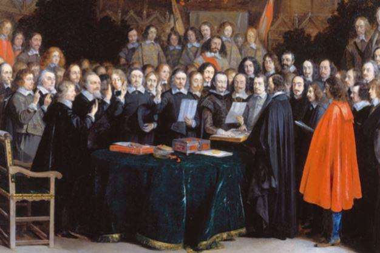
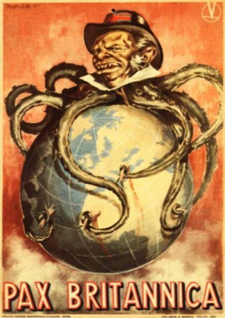
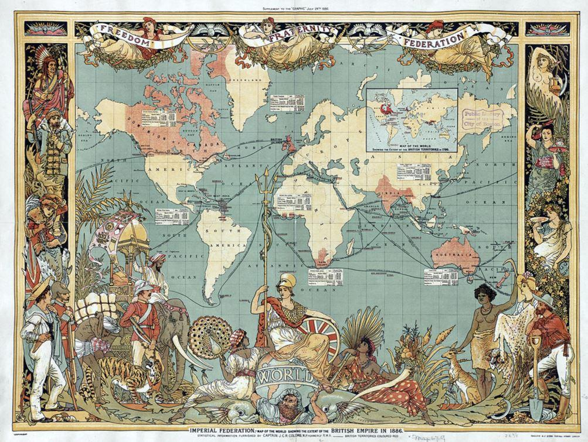

Une idée très répandue désigne les nations et le nationalisme responsables des deux guerres mondiales qui ont embrasé le monde au vingtième siècle en causant la mort de dizaines de millions de personnes. Dans la campagne électorale des élections européennes, soyons sûrs que ce propos va réapparaître sous une forme ou sous une autre.
UNE RÉALITÉ QUELQUE PEU DIFFÉRENTE
L'Europe avait toujours été le théâtre de nombreux conflits entre les puissances qui la composait, et qui n'étaient pas à proprement parler des « nations ».
En 1648, le Traité de Westphalie (souvent appelé « paix de Westphalie » a mis fin simultanément à la « Guerre de trente ans » qui opposait le Saint Empire aux États Allemands entrés en rébellion et un autre conflit qui durait depuis quatre-vingt ans entre le royaume d'Espagne et les Provinces Unies éprises d'indépendance.
Ce traité érigeait un principe simple : aucune puissance européenne ne pouvait être supérieure à toutes les autres réunies. Ce texte apporta une période de paix malheureusement assez courte, entre les États d'Europe et on peut considérer qu'il fut le socle des États-nations et du concept de leur souveraineté.
Ainsi est né l'ordre Westphalien. En fait, la paix de Westphalie était toute relative La fin du XVIIème et le XVIIIème siècle ont été des périodes plutôt mouvementées de ce point de vue. Plusieurs dizaines de conflits ont éclatés, la plupart pour des divergences d'intérêts, de successions, de territoires, voire de religions ou liés à la colonisation. Le plus important fut la « Guerre de Sept ans », considérée comme l'ancêtre des guerres mondiales du XXème siècle.
On peut difficilement prétendre que seuls les nationalismes furent à leur origine.
LES GUERRES NAPOLÉONIENNES ET LEUR HÉRITAGE
À la guerre civile française née de la Révolution de 1789, succédèrent les guerres napoléoniennes. Les historiens n'y voient pas tous un lien direct avec elle. Certains pensent que le point de départ fut en 1803, après que le Royaume Uni nous ait déclaré la guerre. Ces guerres napoléoniennes eurent essentiellement pour théâtre l'Europe, et s'achevèrent par la défaite de Waterloo en 1815.
L'insularité de l'Angleterre lui avait commandé de développer sa flotte marchande et militaire, afin de combattre les effets du blocus affligé par Napoléon. Ce blocus eut d'énormes répercussions dont certaines se sont propagées jusqu'à nos jours. C'est notamment de là qu'est partie l'industrialisation des États-Unis, entraînés dans une guerre de 23 ans avec l'Angleterre qui les a conduit à exploiter leurs propres ressources. À partir de 1815, le Royaume Uni affirma sa puissance maritime, commerciale et militaire.
Durant la seconde partie du XIXème siècle, comme l'écrit Carroll Quigley, un groupe de jeunes anglais décida de lancer leur pays à la conquête du monde afin de le dominer. Ce groupe, plus connu sous le nom de « groupe de Milner » ou encore « Round Table » est en grande partie à l'origine du mouvement mondialiste qui perdure encore de nos jours.
Ce groupe auquel appartenait, entre autres, Cecil Rhodes (fondateur de la Rhodesie et du « prix de Rhodes »), Lord Rothschild, Lord Cecil, Lord Balfour et bien sûr Lord Milner a réussi au-delà de toute espérance. Voici ce qu'écrivait Pierre Hillard dans la préface de la version française du livre de Carroll Quigley « l'histoire secrète de l'oligarchie anglo-américaine » :
« Nous pouvons affirmer que cette parution en langue française de l’Histoire secrète de l’oligarchie anglo-américaine, est véritablement une œuvre de salubrité publique.
En effet, grâce aux travaux de cet universitaire américain, il est désormais possible de mieux connaître les arcanes de ce monde oligarchique opaque dont l’action a été déterminante pour le monde anglo-saxon et, par ricochet, pour la planète entière.
L’auteur développe et explique à partir d’abondantes pièces d’archives que les élites anglo-saxonnes ont élaborées, dans la deuxième moitié du XIXe siècle, un véritable plan de bataille afin de permettre à l’Empire britannique associé aux Etats-Unis d’asseoir une hégémonie complète sur le monde. Cette volonté de puissance et de domination a été l’œuvre d’une poignée d’hommes liés intimement à la haute finance de la City et de Wall Street.
Tout un groupe, issu de la haute aristocratie et bourgeoisie britannique en liaison avec une élite américaine, émerge. Fort d’un travail de bénédictin, Carroll Quigley recense les noms et expose les ambitions de cette « super classe » ou « famille technocratique » avant l’heure définie par des liens sociaux et familiaux étroits »
À la fin du XIXème siècle, l'Angleterre régnait sur le monde. L'Empire britannique avait pour nom le « Commonwealth » Cependant, il lui fallait s'adjoindre les États-Unis avant que ceux-ci ne lui ravissent la place.
L'EUROPE AVANT LA GUERRE DE 14
Deux blocs se faisaient face et chacun était composé de trois empires. Le premier, appelé « Triple Alliance » réunissait l'empire Allemand, l'empire Austro -Hongrois et l'empire Ottoman. Le second, appelé « Triple entente » liait les destinées de la Russie et de l'Angleterre à celle de la France, ces deux derniers étant des empires coloniaux.
La prédominance militaire du Royaume Uni et du Commonwealth avait placé le monde sous la « Pax Britannica » depuis 1815 jusqu'aux environs de 1870. Puis, l'industrialisation de l'Allemagne et la guerre franco-prussienne eurent raison d'elle. L'Europe continentale représentait un danger pour l'Angleterre et vint l'idée de faire s'entrechoquer l'Allemagne et la France.
Malheureusement pour les Anglais, aucun des deux n'avaient les moyens de financer une guerre qui ne pouvait qu'être ruineuse, compte-tenu des moyens matériels et humains nécessaires. Les dépenses qu'ils avaient effectuées pour leur réarmement leur rendaient impossible tout emprunt supplémentaire.
Dans son remarquable ouvrage consacré à la création de la FED, Eustace Mullins écrit :
« Les finances de l'Europe sont tellement compromises que les gouvernements (européens) pourraient se demander si la guerre, malgré toutes les circonstances épouvantables qui l'accompagne, ne serait pas préférable au maintien d'une paix aussi précaire que coûteuse. Si les préparations militaires de l'Europe ne débouchent pas sur la guerre, elles pourraient très bien aboutir à la banqueroute des États-Unis. Et si de telles folies ne conduisent ni à la guerre, ni à la ruine, alors elles se dirigent à coup sûr vers une nouvelle révolution industrielle et économique »
On comprend alors mieux l'enchaînement historique des choses.

LA CRÉATION DE LA FED A PERMIS LE FINANCEMENT DE LA GUERRE DE 14
Le processus qui a mené à la création de la Réserve Fédérale est minutieusement décrit dans l'ouvrage de Mullins. On peut simplement en dire ceci : L'histoire des États-Unis s'est faite en grande partie sur le contrôle de la monnaie américaine. Benjamin Franklin disait que la révolte des colons s'était produite lorsque la Banque d'Angleterre leur avait imposé la monnaie anglaise à la place des « local scripts » émis par leurs banques locales. Cette lutte pour le contrôle de la monnaie se termina en 1913 avec la création par des banquiers privés d'une banque centrale qu'ils baptisèrent « Réserve Fédérale » car le peuple américain, d'esprit libéral, était hostile au concept de banque centrale. Après avoir eux-mêmes et avec le concours d'hommes politiques influents, rédigé le « Fédéral Réserve Act » ils ont réussi à en imposer le vote par le Congrès le 23 décembre 1913 à 23 h30.
Au début du chapitre consacré à l'histoire du vote de cette loi, Eustace Mullins cite (p 57) le sénateur Lindbergh après l'adoption de la loi : « notre système financier est un faux système qui représente un lourd fardeau pour le peuple. Cette loi établit le trust le plus gigantesque de la Terre. »
Il tenait ainsi à dénoncer la mise en place de la Réserve Fédérale qui n'était, in fine, qu'une banque privée possédée par d'autres banques privées , mais qui avait le privilège de contrôler l'émission et le taux du crédit de la monnaie américaine, alors que, d'après l'article premier de la Constitution, ce droit appartenait d'une façon inaliénable au Peuple Américain. Pour créer de la monnaie à partir de rien, la FED a besoin des bons du Trésor Américain et fonctionne donc comme la banque d'Angleterre, (et comme la BCE aujourd'hui) par émission de « l'argent-dette »
Ainsi créée, elle pouvait financer à crédit les puissances européennes et c'est ce qu'elle a fait, avec l'aide de la banque d'Angleterre, en faisant porter sur le peuple américains les dettes ainsi contractées.
POUR QUE LES DETTES SOIENT REMBOURSÉES, IL FALLAIT UN VAINQUEUR
L'historien Henri Guillemin cite Francis Delaisi qui écrivait en 1911 :
« En dépit des apparences démocratiques en France, le peuple ne contrôle pas ses gouvernements. Un groupe étroit s’est emparé des conseils d’administration des grandes sociétés financières. Ces quelques hommes tiennent entre leurs mains les banques, les mines, les chemins de fer, les compagnies de navigation, bref, tout l’outillage économique de la France. Sans oublier la sidérurgie et les fabriques d’armes d’où ils tirent de croissants profits. Ils dominent le parlement et ont à leur solde la grande presse. La guerre ne leur fait pas peur, ils la considèrent même avec intérêt. (…) Nos banques ont gardé le souvenir des bénéfices énormes réalisés par elles en 1871. » - Francis Delaisi, La guerre qui vient, 1911
La situation actuelle est-elle réellement différente ?
J'aimerais que l'on m'explique où est le nationalisme générateur de la guerre... La suite de la guerre vient en renfort de cette analyse. Lorsque l'Allemagne est sur le point de perdre, en raison des événements sociaux internes, la révolution bolchevique vient à point nommé pour soulager l'Allemagne du front de l'Est par la signature de la paix de Brest-Litovsk. Antony Sutton décrit dans son livre « Wall street et la révolution bolchevique1 » les transferts d'argent opérés par Trotski. Il y consacre un chapitre entier dans lequel il relate l'action concertée des médias et du Département d'État. Trotski était porteur de 10.000 dollars dont la provenance n'a jamais été clairement établie, destinés à la propagande des Bolchéviques tandis que la presse américaine entrait en campagne pour justifier l'entrée des États-Unis dans la guerre.
Les deux millions de soldats américains envoyés en France furent décisifs pour la victoire sur l'Allemagne et permirent aux États Unis d'être dans le camps des vainqueurs, ce qui ne fut pas sans conséquences pour le Traité de Versailles.
LE RÔLE DES BANQUIERS DANS LE TRAITÉ DE VERSAILLES
Le site du Canadien Michel Duchaine affirme que l'aide qu'allait apporter certains banquiers internationaux et des grandes sociétés industrielles américaines à la prise de pouvoir d'Hitler remonte au traité de Versailles.
Cette aide s'est poursuivie dans certains cas pendant la seconde guerre mondiale. À 2noter qu'Antony Sutton, dans son livre « Wall street et l'ascension de Hitler » décrit sensiblement les mêmes choses. Dans toute cette affaire, rien n'a véritablement été laissé au hasard. Il n'empêche que cette collusion entre les banquiers internationaux et de grandes entreprises multinationales sont, beaucoup plus que les nationalismes qu'elles ont contribué à exacerber, à l'origine de ces guerres mondiales. Beaucoup de gens étaient restés dubitatifs quant aux conséquences à terme de la signature du traité de Versailles. L'Histoire a montré qu'ils avaient raison.
POURQUOI CES DEUX CONFLITS MONDIAUX
Nous connaissons l'enchaînement des faits. Nous pouvons en situer l'origine. Reste cependant la grande question : quel était le but réel poursuivi ? Quels étaient les motivations de ce qu'on peut désigner comme une d'oligarchie financière, souvent appelée « la finance internationale » ? Pour tenter d'y répondre, on constate qu'à la fin de chacune de ces guerres, et sous couvert d'éviter la suivante, des organismes supranationaux ont été créés. Après la tentative de la SDN en 1921 (Société des Nations), ce fut la Conférence de San Francisco qui créa l'ONU (Organisation des Nations Unies) en 1946. Depuis et sous couvert de cette instance, ce sont un grand nombre d'organisations « mondialistes » qui ont été créées. Certaines paraissent indispensables, comme l'OACI (aviation civile internationale) mais d'autres ont clairement été créées dans le but d'imposer la mondialisation que nous connaissons aujourd'hui. Cette mondialisation, qui ne semble bénéficier qu'aux élites au détriment des peuples, aurait-elle pu exister sans ces conflits ?
J.G.
Notes
1Wall street et la révolution bolchevique Antony Sutton Éditions le retour aux sources.
2Wall street et l'ascension de Hitler Antony .Sutton Éditions le retour aux sources.
Partager cette page